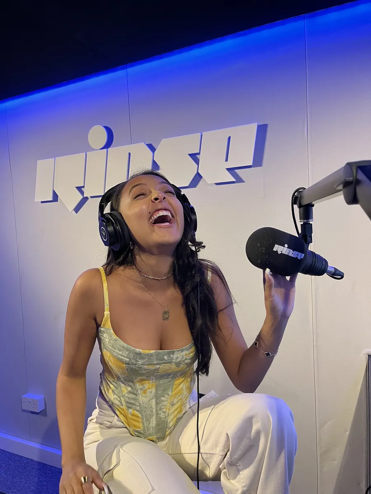
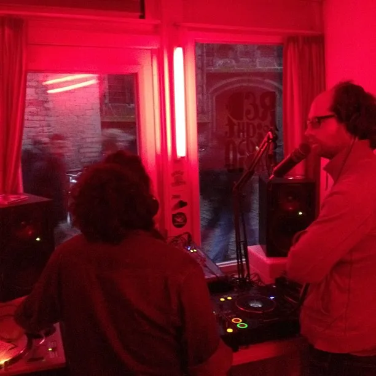
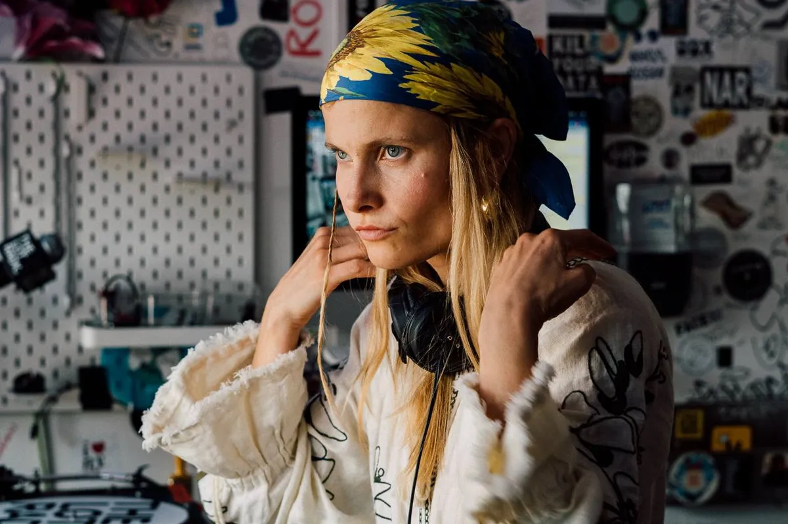

Live DJ sets
Live DJ Sets: The Platforms That Film Them
Pirate radio, a webcam in London, a shipping container in Brooklyn and a white-tiled room in Berlin: who films DJ sets, since when, and what 62,877 of their recordings add up to.
Where to put the camera.
Fifteen years ago a DJ set was something you heard in the room or not at all. The exception was radio: a pirate station broadcasting from a tower block, a specialist show late on a Friday, a tape somebody recorded off either. Nobody outside the club saw the DJ's hands, and nobody saw the people dancing.
That changed through a handful of broadcasters, most of them started by a few friends with very little money. Each found its own answer to the same question, which is where to put the camera. This is a short history of them, from pirate radio to a white-tiled room in Kreuzberg, with the numbers from this site's own catalogue of their recordings.
Before the camera: pirate radio.
Before anyone filmed a DJ, London already had a broadcaster that treated the DJ as the programme. Rinse FM went on air in September 1994 as a pirate, started by Geeneus and Slimzee and transmitting from Ingram House in Tower Hamlets. Shows went out from kitchens and bedrooms, wherever the equipment could be kept out of sight.
The music changed with the city. Rinse began on jungle with MCs, moved to UK garage around 1998, and in the early 2000s became one of the stations grime and dubstep grew up on: Dizzee Rascal and Wiley got their first exposure there, and Skream, Kode9 and Oneman all had shows. In 2005 Ofcom disconnected one of its transmitters, and Slimzee was given an ASBO that banned him from the rooftops of Tower Hamlets.

A pirate set was a live set in every sense. It went out once, with an MC on the microphone and phone-ins between tunes, and unless a listener taped it, it was gone. Jungle and garage records were often played on pirate radio from dubplates long before they were released, which made the station, not the shop, the place a record was first heard. The jungle guide and the UK garage guide tell that part in full.
Rinse started streaming online in 2006 and kept every show. It won a community licence in June 2010 and broadcast legally on 106.8 FM from February 2011, and Rinse France followed in Paris in 2014. By then the station had started filming too. The grime shows on its YouTube channel, four MCs to one show, are among the most watched things it has uploaded.
In Amsterdam, the year Boiler Room started, Red Light Radio opened in a former brothel on the Oudekerksplein, in the middle of the red light district. It broadcast daily shows from 2010, shared the building with a record shop, and worked with festivals and museums across the world. The daily shows ended with a final broadcast on 27 June 2020: the building was being turned into apartments, and lockdown brought the goodbye forward.

Red Light Radio mattered less for its reach than for its example. A radio station in a small room, open to the street, playing whatever its residents brought, is the model The Lot Radio and Kiosk Radio would build on a few years later.
Boiler Room: what it is, and what a Boiler Room set is.
What is Boiler Room? A London broadcaster that films DJ sets and streams them live, and the one that set the pattern for most of this page. It began in March 2010, when Blaise Bellville asked Thristian Richards to livestream a mix for a magazine. The stream went out on Ustream from a webcam and turned into a weekly show of local DJs. Floating Points played the second one. Its recording has been lost.
What made it spread was where the camera stood. A Boiler Room set is filmed from behind or beside the DJ, in a room rather than on a stage, with the people dancing standing in shot around the decks. The crowd is half of what you watch. Within a year the same idea was running in Berlin, Los Angeles and São Paulo, and the programme widened from underground dance music to hip hop, jazz and classical.
Fourteen years after that lost second show, Floating Points came back to Boiler Room in New York with a five-hour set, and this time it was kept.
Boiler Room grew into events as much as broadcasts. DJ EZ played for 24 hours in February 2016 and raised more than £60,000 for Cancer Research UK. A film arm, 4:3, followed in 2018, and the first Boiler Room Festival, in Peckham, in 2019.
So what is a Boiler Room party? A filmed event with a guest list. You RSVP and hope, because the rooms are small, and everyone else watches the stream. When Charli xcx played in Bushwick, Brooklyn in February 2024, more than 25,000 people RSVPed, the most in Boiler Room's history. For the sets themselves, ranked and counted, see the best Boiler Room sets.
Radio with a camera: NTS, The Lot Radio and Kiosk Radio.
NTS started a year after Boiler Room, in April 2011 in Hackney, and took the other road: radio first, pictures second. Femi Adeyemi launched it on about £5,000, after putting up notices around London that read "independent radio station in London" and getting around sixty replies. The name comes from Nuts To Soup, a blog he had run before. NTS now broadcasts on two live channels with more than 700 residents, and its guest shows have included Björk, Thom Yorke and Aphex Twin.
NTS films far less than it broadcasts. This catalogue holds 264 of its videos against more than 8,000 from Boiler Room, and the most watched of them is Aphex Twin's live set at Field Day in 2017, filmed at a festival rather than in the studio.
The Lot Radio made the room itself the point. François Vaxelaire, a Belgian living in Williamsburg, passed an empty lot on his way to work, found it was up for lease and put a reclaimed 20-foot shipping container on it: a radio studio on one side, a counter selling coffee, beer and wine on the other. It opened at 17 Nassau Avenue in 2016 and has streamed around the clock since, with more than 165 resident DJs.

Because it never stops, The Lot has uploaded more sets than any other broadcaster in this catalogue: 9,998, against Boiler Room's 8,206, more than two and a half for every day it has been on air. Nina Kraviz played there in March 2017, in the station's first year.
Kiosk Radio did the same thing in a park. In 2017 five friends answered a City of Brussels call for proposals to reuse an abandoned wooden kiosk in the Parc Royal, and turned it into a community web radio that broadcasts every day. The schedule runs from jazz and ambient to hip hop and electronic music, and the people playing are as often a local crew as a touring name. Acid Arab played it in January 2020.
The same model, a small room, a daily schedule and a camera, runs through a network of community stations further east. Seoul Community Radio, Hong Kong Community Radio, Manila Community Radio and Bangkok Community Radio are all in this catalogue. Between them they have uploaded more than 8,000 sets, and all of those together have been watched fewer times than Boiler Room's Solomun set on its own.
Other ways to film a set: The Lab, Cercle and Keep Hush.
Mixmag, the dance music magazine, built its own booth and called it The Lab. It has streamed DJs from London since the early 2010s and has since set the booth up in Los Angeles, New York, Miami, Mumbai, Paris, Johannesburg and Sydney. Its most watched upload in this catalogue is Alison Wonderland in The Lab LA in 2015, at 15.4 million views. Black Coffee has played it in London, Miami and New York; the London set from 2014 is below.
Cercle went the other way from all of them: out of the room and into the view. Derek Barbolla started it in Paris in 2016 as a Monday stream, an interview and then a live set, from his own flat. Cercle's own upload of its first show is To Van Kao, playing in Derek's living room. The neighbours complained, and the stream moved on to a sandwich shop's basement, a club and a barge on the Seine. The broadcast usually named as its beginning, Møme at the Eiffel Tower in October 2016, came after all of that.
From there the locations became the programme: the Château de Chambord, the pyramids at Giza, Petra, the Salar de Uyuni salt flat in Bolivia, filmed in 4K with drones. Of every platform here it is the least like Boiler Room. There is often no crowd in shot at all, only the DJ and the view. Cercle started its own label, Cercle Records, in September 2020.
Keep Hush came from the other end of London's music, and it is the one closest to this site's own. Fred Conybeare started it as a blog about underground music, streetwear and art, and Freddy Masters joined to run the music side. The first broadcast came from a basement studio in the Soho office where the two of them worked, with three people in the room. It grew into a members' club whose members propose the line-ups, and its sound leans to UK funky, garage, grime and jungle, with DJs like Sherelle, Slimzee and P Money.
Tasha's all-vinyl jungle set, from a 1985 Music takeover in 2019, is below.
2020: HÖR, and the year every club became a stream.
HÖR opened in August 2019, a few months before anyone knew it would be needed. Ori Itshaky and Doron Charly Mastey, a DJ duo from Tel Aviv who record as TV.OUT, moved to Berlin that year and built a studio in Kreuzberg by hand: a tiny room of white tiles, green neon and a DJ booth at the window. Most sets last an hour, and on YouTube, where the channel goes by HÖR Berlin, each is named by its time slot.
Then the clubs shut. Berlin's closed on 13 March 2020, and five days later the Clubcommission launched United We Stream, a nightly stream at 7pm from empty clubs with a fundraiser attached. Within a year it had put more than 2,000 artists on air from around 450 locations in about 100 cities. Boiler Room ran Streaming From Isolation, a fundraising series of DJs playing from wherever they were locked down.
At the start of the pandemic HÖR was already doing what every club was now trying to do, and it kept a DJ in front of its camera every day. The white tiles became as recognisable as Boiler Room's crowd behind the decks. Ellen Allien played the room in April 2020.
HÖR has since uploaded 9,708 sets, the second most of any broadcaster in this catalogue. The same lockdown that made it also ended Red Light Radio's daily shows that June.
Who owns the platforms now.
Most of these started with a few friends and a small budget, and several now belong to much larger companies. Boiler Room was bought by the ticketing company DICE in 2021 and sold to Superstruct Entertainment, a festival group, in January 2025. Universal Music Group became the largest shareholder in NTS in June 2023. In June 2026, HÖR was acquired by 99Solutions, a Berlin music services company.
Others grew sideways. Rinse took over the running of Kool FM in 2023 and relaunched Bristol's SWU FM the same year. Cercle has stayed in Paris and added a festival and a series of immersive concerts, Cercle Odyssey, which launched in 2025.
Measured
Live DJ sets by the numbers.
This site's Selector plays one of 62,877 recorded DJ sets at random, every one of them an upload of more than twenty minutes from a broadcaster's own YouTube channel, 37 channels in all. Counted by platform, they show something the histories above do not: how many sets a platform films and how many people watch them have little to do with each other.
| Broadcaster | Sets | First upload | Views | Most-watched set |
|---|---|---|---|---|
| Boiler Room | 8,206 | 2012 | 1,774M | Solomun, Tulum, 2015 (76.2M) |
| Cercle | 178 | 2016 | 984M | Boris Brejcha, Grand Palais, 2019 (68.4M) |
| Mixmag | 1,943 | 2012 | 464M | Alison Wonderland, The Lab LA, 2015 (15.4M) |
| HÖR | 9,708 | 2019 | 239M | ¥ØU$UK€ ¥UK1MAT$U, 2022 (5.4M) |
| The Lot Radio | 9,998 | 2017 | 50M | Adam Port, 2024 (3.9M) |
| Rinse FM | 895 | 2013 | 19M | Grime Show: P Money, D Double E, Big Narstie & Jammer, 2014 (1.0M) |
| NTS Radio | 264 | 2015 | 13M | Aphex Twin at Field Day, 2017 (1.7M) |
| Keep Hush | 1,517 | 2016 | 12M | ¥ØU$UK€ ¥UK1MAT$U, Tokyo, 2022 (0.9M) |
| Kiosk Radio | 8,558 | 2018 | 8M | Acid Arab, 2020 (0.2M) |
Cercle has 178 sets in this catalogue, about 2% of Boiler Room's count, and they have been watched 984 million times, more than half as often as all 8,206 of Boiler Room's put together. The picture probably explains it: a set at Petra works as something to leave on a television, which a set in a basement rarely does. Boris Brejcha at the Grand Palais in Paris, from 2019, has 68.4 million views on its own.
The round-the-clock stations are the opposite case. The Lot Radio has 9,998 sets and Kiosk Radio 8,558, both more than Boiler Room, with 50 million and 8 million views between them. They are not made to travel. They are a daily schedule, and the archive is a side effect of keeping it.
Every number here comes from the Selector, which is also the quickest way to use all of this: press the button and it picks one of these sets for you.
Where to watch live DJ sets.
Almost everything on this page is free. The archives sit on each broadcaster's YouTube channel, and the live streams on their own sites: Boiler Room lists its upcoming shows at boilerroom.tv, NTS streams its two channels at nts.live, The Lot Radio and Kiosk Radio stream from their websites through the day, and HÖR goes out live and keeps its sets on YouTube.
If you know what you want, search the channel. If you don't, that is what the Selector is for: it knows nothing about your taste and picks from all of them, which is how you end up with an hour of Acid Arab in a Brussels park. For more ways to hear something you haven't heard before, see how to find new music.
Live DJ sets FAQ.
What is a live set for a DJ?
The words are used two ways. Strictly, a live set means an artist performing their own music on hardware or a laptop, building the tracks as they go, while a DJ set means playing records. The platforms on this page use "live DJ set" more loosely, for any DJ set streamed as it happens, and most of what they call live sets are DJ sets filmed live.
What is a Boiler Room set?
A DJ set filmed and streamed by Boiler Room, the London broadcaster that has been doing it since 2010. What makes one recognisable is the camera: the DJ plays in the room rather than on a stage, and the people dancing behind the decks are in the shot.
What is a Boiler Room party?
A Boiler Room event, filmed as it happens. Entry is usually by RSVP to a small room, and far more people watch the stream than get in: Charli xcx's Brooklyn party in February 2024 drew more than 25,000 RSVPs.
Who owns Boiler Room?
Superstruct Entertainment, a festival company, which bought it from the ticketing company DICE in January 2025. DICE had bought it in 2021. Boiler Room was founded in London in 2010 by Blaise Bellville and Thristian Richards.
What does NTS stand for?
Nuts To Soup, the name of a blog its founder Femi Adeyemi ran before he started the station in Hackney in April 2011. On air it is simply NTS.
Sources.
- Wikipedia: Rinse FM
- Wikipedia: Red Light Radio
- Resident Advisor: Amsterdam's Red Light Radio will close in June
- Wikipedia: Boiler Room (music broadcaster)
- Boiler Room: Streaming From Isolation
- Wikipedia: NTS Radio
- Wikipedia: The Lot Radio
- Resident Advisor: The Lot Radio opens in a shipping container in Brooklyn
- Kiosk Radio: About
- Mixmag: The Lab
- Wikipedia: Cercle (company)
- Billboard: How party streaming platform Cercle hosts shows at the Eiffel Tower, a remote Bolivian salt flat and more
- DMY: Inside Keep Hush, the UK's number one music members' club
- ADAM Audio: HÖR Berlin
- Resident Advisor: HÖR acquired by Berlin-based music services company 99Solutions
- One year of lockdown, one year of United We Stream
- Set counts, first-upload years and view counts are measured from this site's own catalogue of 62,877 recorded DJ sets from 37 broadcasters' YouTube channels, as of September 2026.
Continue reading
Read next.
 A12Guide / London clubs / ~12 min
A12Guide / London clubs / ~12 minClubs in London: The Legends and the Best Ones Open Now
The London clubs that made acid house, jungle, garage and dubstep, from Heaven to the Blue Note, and the best clubs in London open now.
Read article → A03Timeline / UK music / ~27 min
A03Timeline / UK music / ~27 minThe Evolution of UK Electronic Music
Ten sounds that travelled from regional underground scenes into global culture.
Read article → A09List / Boiler Room / ~13 min
A09List / Boiler Room / ~13 minBest Boiler Room Sets of All Time, Ranked and Measured
Eighteen sets picked for what happens in them, beside the ten most-watched, counted across 8,206 Boiler Room recordings.
Read article → A10Guide / Burning Man / ~12 min
A10Guide / Burning Man / ~12 minWhat Is Burning Man? The Event, the City and the Music
A city built in the Nevada desert for a week, with no lineup and nothing for sale, and the sound camps that play anyway.
Read article →